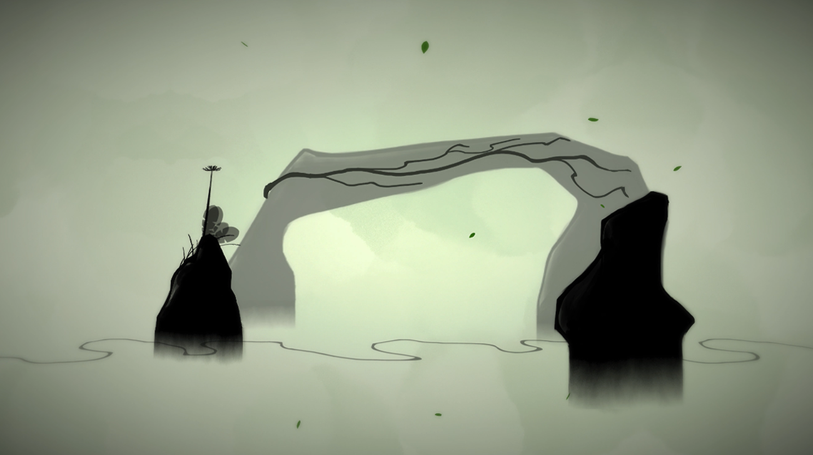
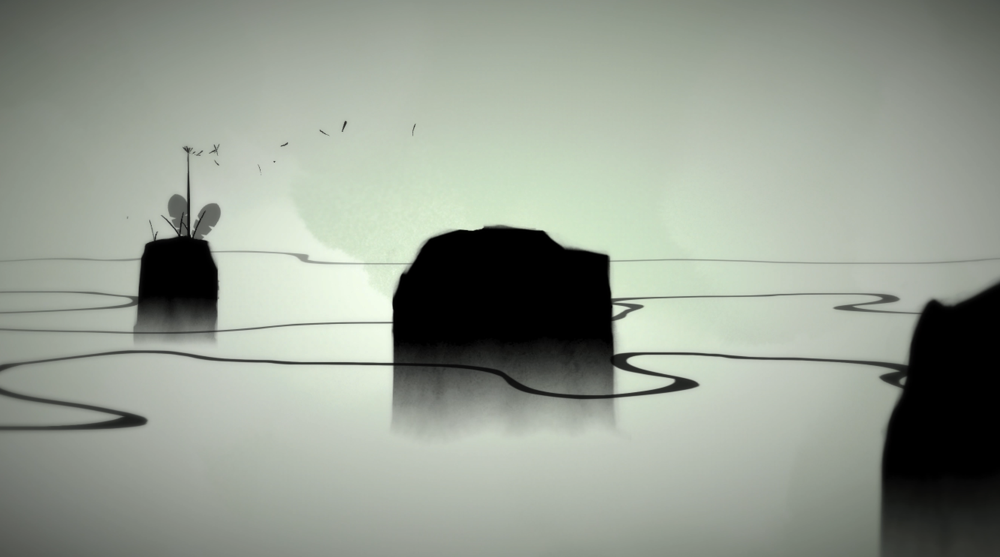

Dandelion is a simple yet philosophical game. Normally speaking, it is a 2D mobile puzzle game. You help the dandelion to spread seeds among the mountains and caves. The main mechanics include shifting perspective and striking the screen to blow seeds through the wind. Your aim is to bring life to every corner of the world.
Striking the dandelion, like what we would do as a kid, can spread out its petals. Flowing with the wind and landing on a new land, the petals will grow as a new flower. The action is designed for bridging the experience between the virtual world and the nature. I hope the player can feed nature on their finger when they are striking the dandelions.
The mechanics of shifting perspective is based on the theory of perspective difference and optical illusion. The player can move the camera to view the scene from different angles. The relative position of the objects in the scene would be modified according to its movement. With the use of visual dislocation, the player can remove the barrier between the platforms or changes the direction of the wind. You can help the dandelions to approach some seemingly unreachable locations.
The aesthetic of Dandelion is in the style of ancient Chinese painting. The content is of nature. My intention is to subtly draw the player's perspective from the internal world of a creator to the external world of nature. The player's fingers dab the screen like paint. The seeds give root to crisp silhouettes of nature.
Rather than hinging on a dramatic arc, the narrative of Dandelion dramatizes the mundane life cycle of a simple dandelion. In the States, this flower is not perceived as something special; it is a weed. For me, though, this flower, which grows pervasively, is a nice metaphor for the life of everyman.
Dandelion is intended to evoke relaxation in the player. My hope is that the wordless, universal design elements plant these deeper meanings in the player's subconscious.